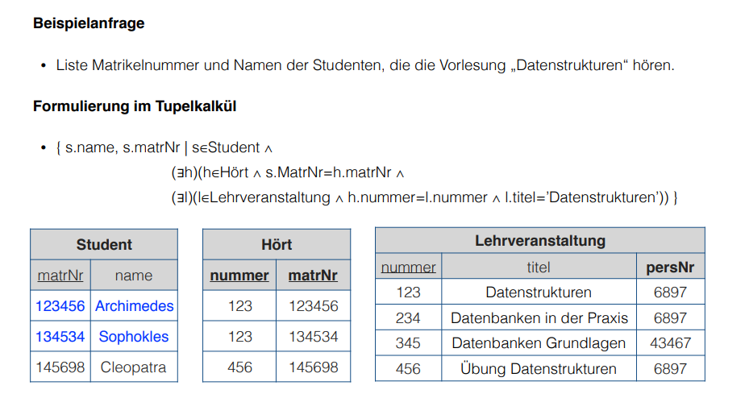
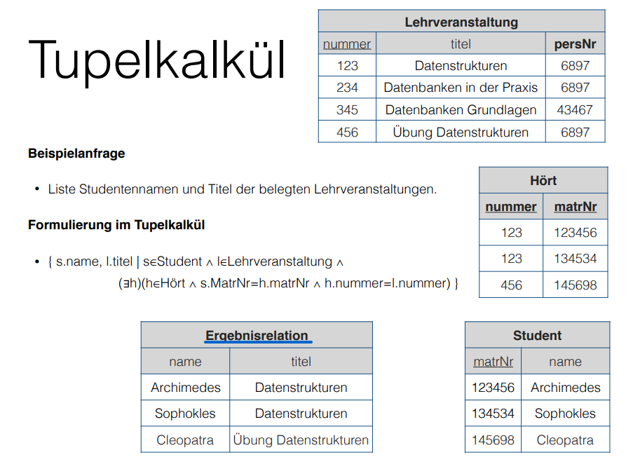
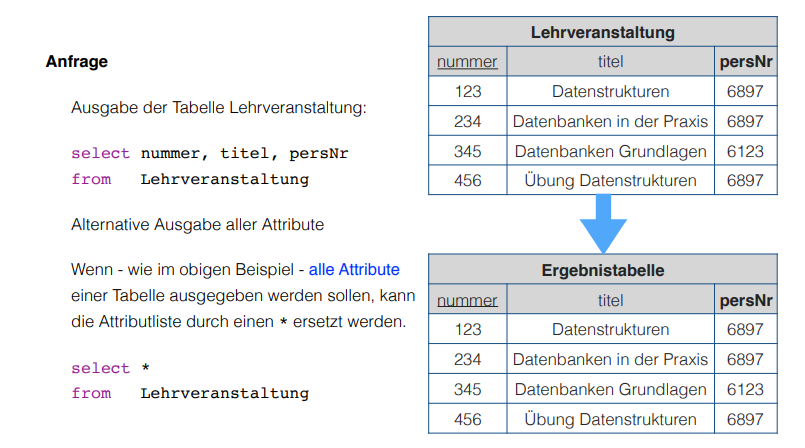
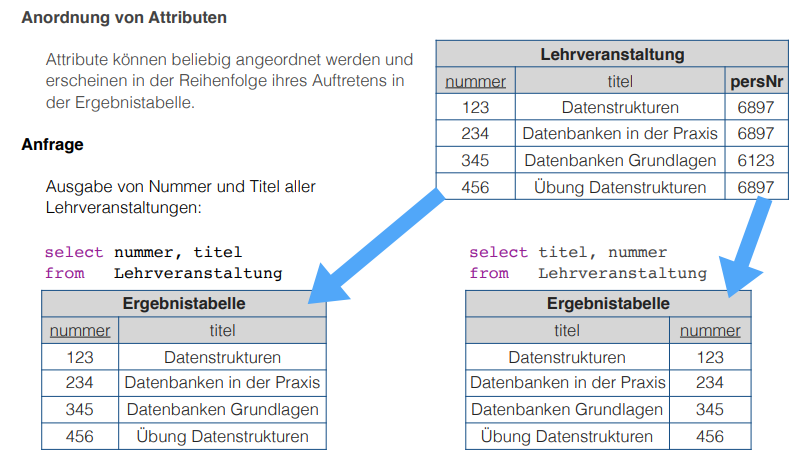
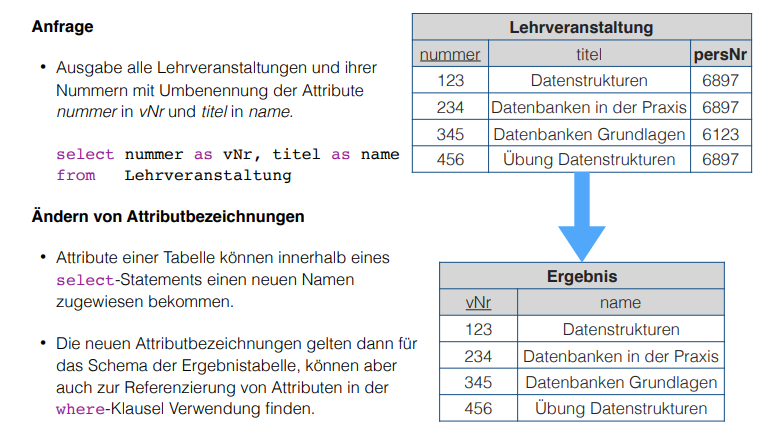
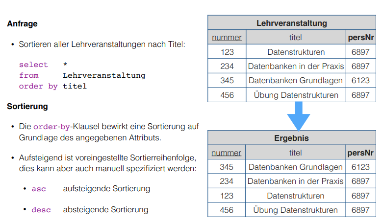
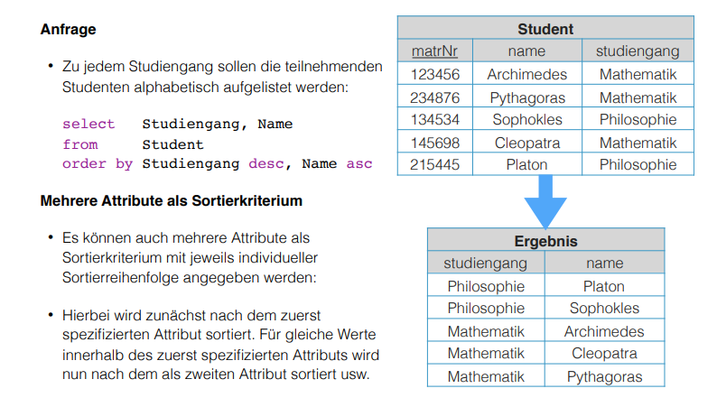
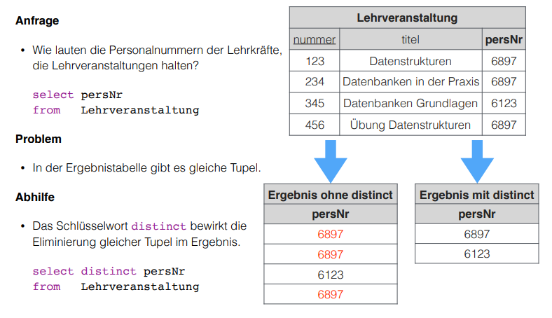

Relational Calculus (Relationenkalkül)
The expressions in relational algebra form a procedural way of describing the way to an result. The resulting relation is in turn derived from intermediate relation results. This way describes they way of how you come to the relation result.
There is an alternative however to describe a query result without specifying the derivation (Herleitungsvorschrift), which is called relational calculus. In relational calculus only the requirements of the desired resulting tuples are specified/described but not the way they are retrieved. This way describes what is contained in the result relation.
A calculus (Kalkül) is a method, that is determined by a set of rules, to deal with certain mathematical problems in a systematic manner and solve them automatically (slides: ist eine durch ein System von Regeln festgelegte Methode, mit deren Hilfe bestimmte mathematische Probleme systematisch behandelt und automatisch gelöst werden können)
The basis for relational calculus is predicate/quantifier logic of the first degree (Prädikatenlogik erster Ordnung) and the result of a query is a set of tuples. In relational calculus calculus expressions (Kalkülausdrücke) are used, in particular the tuple calculus and the domain calculus.
Tuple Calculus
The query notation for tuple calculus is {t | P(t)} where t is a tuple variable and P is a predicate over t. The result of such query is a set of all tuples for which the evaluation of the predicate P(t) yields true.
Take the following example relation "Student":
| matrNr{PK} | name | major |
|---|---|---|
| 123456 | Archimedes | Computer Science |
| 134534 | Sophokles | Philosophy |
| 145698 | Cleopatra | Computer Science |
Query: {s | s ∈ Student ∧ s.major='Computer Science'}
Result:
| matrNr{PK} | name | major |
|---|---|---|
| 123456 | Archimedes | Computer Science |
| 145698 | Cleopatra | Computer Science |
-
Tuple Calculus - Atoms and Formulas
For the construction of formula we define sets of atomic formulas. Atoms in tuple calculus:
- ti ∈ Rj → the relation Rj is assigned as the codomain(Wertebereich) to the tuple variable ti
- ti.A Θ tj.B → comparison operation between two attributes A and B which are attributes of the relations that were assigned as codomains to ti and tj
- ti.A Θ c → comparison operation between attribute A and constant C
- c Θ ti.A → comparison operation between constant c and attribute A
The comparison operation denoted by Θ encompasses the usual comparison operators that are valid on the respective attribute domains. Usually these are <, >, ≤, ≥, =, ≠ and =, ≠ for boolean values.
Every atom is a formula. When F1 and F2 are formulas then the following constructs are formulas as well:
- F1 ∧ F2 = Conjunction
- F1 ∨ F2 = Disjunction
- ¬ F1 = Negation
- (F1) = wrapping (Klammerung)
When F is a formula and t is a tuple variable in F then the following constructs are formulas:
- (∃ t)(F) = existential quantifier (Existenzquantifizierung)
- (∀ t)(F) = universal quantifier (Universalquantifizierung)
-
Tuple Calculus - Free and Bounded Tuple Variables
A tuple variable in an atom (respective in a formula consisting of one atom) is free.
A tuple variable in a formula that is composed via negation, conjunction or disconjuction of other partial formulas is free or bound depending on its state in the other partial formulas. In this case a tuple variable can be free and bound at the same time.
Free tuple variables t of a formula F get bound to the respective quantifier F' when they are embedded in one of the following formulas F':
- F' = (∃ t)(F)
- F' = (∀ t)(F)
Examples:
- F1: s.name = 'Cleopatra'
- F2: (∃ t)(s.matrNr = t.matrNr)
- F3: (∀ s)(s.name = 'Cleopatra')
-
Tuple Calculus - Computing Formulas (Substitution)
Given that F(s) is a formula with the tuple variable s ∈ R and a tuple t ∈ R. Then the following happens in each atom of F(S) with a free s:
- s ∈ R is replaced with true
- s.A Θ u.B is replaced with t.A Θ u.B (A and B are atrtibutes, u is another tuple variable u ≠ s)
- s.A Θ c is replaced with the concrete boolean value of the operation t.A Θ c
These steps are repeated for further tuple variables if necessary until F(s) only holds (possibly logically connected) boolean constants (true/false) and atoms with bound variables.
Example: Given tuple variable s and t from a schema R(a,b) and the formula ∀ t(t ∈ R ∧ t.a = s.a ∧ t.b < s.b) the substitution happens/looks like this:
- the tuple s = (8, 12) → ∀ t(t ∈ R ∧ t.a = 8 ∧ t.b < 12)
- then the tuple t = (8, 9) → ∀ t(true ∧ 8 = 8 ∧ 9 < 12) → ∀ t(true ∧ true ∧ true) → ∀ t(true)
-
Tuple Calculus - Computing Formulas for bound Tuple Variables
Given a tuple variable s ∈ R:
- the formula (∃ t)(F) evaluates to true if F becomes true for at least one substitution of s and the formula evaluates to false otherwise
- this means that at least one tuple can be associated with the free tuple variable s for which F becomes true
- the formular (∀ t)(F) evaluates to true if F becomes true for all substitutions of s
- this means that F is true/fulfilled for all tuples that can be assigned to the free tuple variable s
Final Formula Computation = formulas now only hold logically connected boolean values which can be evaluated accordingly.
- the formula (∃ t)(F) evaluates to true if F becomes true for at least one substitution of s and the formula evaluates to false otherwise
-
Tuple Calculus - Expressions and Queries
In general an expression/query of the tuple calculus is of the following form: {t1.A1, t2.A2, …, tn.An | F(t1, …, tm)}
ti are tuple variables (which in general encompass all tuples of the so called univesere, that's why they are usually assigned to a relation) and Ai are attributes of the relation that is assigned to the tuple variable ti, while F(t1, …, tm) is the formula of the tuple calculus.
Taking our previous student relation:
matrNr{PK} name major 123456 Archimedes Computer Science 134534 Sophokles Philosophy 145698 Cleopatra Computer Science Query: {s.matrNr, s.name | s ∈ Student ∧ s.major='Philosophy'} yields
matrNr{PK} name 134534 Sophokles
Now onto another example. Given the relations teacher
persNr{PK} name 3467 Ares 6897 Zeus 43467 Hera and lectures
number{PK} title persNr{FK} 123 Data Structures 6897 234 Databases in Praxis 6897 345 Database Essentials 43467 456 Exercise Data Structures 6897 we want to know the names of the teachers that hold at least one lecture: {t.name | t ∈ Teacher ∧ (∃ l)(l ∈ lectures ∧ t.persNr = l.persNr)} which leads to this resulting relation
name Zeus Hera
To query the lecture titles of lectures given by Zeus we'd use the following: {t.title | t ∈ Lectures ∧ (∃ l)(l ∈ teacher ∧ t.persNr = l.persNr ∧ l.name='Zeus') } to get
title Data Structures Databases in Praxis Exercise Data Structures
For the next example queries I embed the slides because it is more clearer and not so much overhead. 
One problem with queries of tuple calculus is that they can sometimes produce an infinite result relation, eg { s | ≠(s ∈ Student) }.
The domain of a formula contains all constant values of a formula and all possible attribute values of all tuples in the referenced relations.
A safe query is a query where the result of the query stems from the domain of the formula → we only use safe queries (all queries we've seen so far are safe).
Also see https://en.wikipedia.org/wiki/Tuple_relational_calculus for more
Domain Calculus
The domain relational calculus is also a calculus that serves as a declarative database query language for the relational data model. In DRC queries have this form {d1, d2, …, dn | F(d1, d2, …, dm)} with m ≥ n where di are domain variables which describe the values of attribute domains and F(d1, d2, …, dm) is the formula. The formula consists, like in the relational calculus (tuple?), of either a an atom, a logical connection of formulas or a formula with a domain variable which is existential quantified or universal quantified.
-
Domain Calculus - Atoms and Comparison
Given the relation R of degree n where every di is a domain variable, the atom \(R(d_1, d_2, ..., d_n)\) expresses that the codomain (Werteliste) <d1, d2, …, dn> has to be a tuple of the relation R.
Comparisons
- di θ dj → comparison operation between two domain variables di and dj
- di θ c → comparison operation between domain variable di and constant c
- c θ di → comparison operation between constant c and domain variable di
The comparison operation denoted by Θ encompasses the usual comparison operators that are valid on the respective attribute domains. Usually these are <, >, ≤, ≥, =, ≠ and =, ≠ for boolean values (required that the elements of the domain can be compared pairwise).
-
Domain Calculus - Example Queries
Given the relations teacher
persNr{PK} name 43467 Ares 6897 Zeus 43424 Hera and lectures
number{PK} title persNr{FK} 123 Data Structures 6897 234 Databases in Praxis 6897 345 Database Essentials 43467 456 Exercise Data Structures 6897 1.) List the lecture titles that are held by teacher with persNr 6897?
- The query {b | (∃ a) (∃ c) (Lecture(a,b,c) ∧ c=6897)} yields:
title Data Structures Databases in Praxis Exercise Data Structures 2.) What are the numbers and titles of lectures held by Zeus?
- The query {a, b | (∃ c) (∃ d) (∃ e) (Lecture(a,b,c) ∧ teacher(d,e) ∧ c=d ∧ e='Zeus')} yields:
number{PK} title 123 Data Structures 234 Databases in Praxis 456 Exercise Data Structures 3.) What's the title of lectures hold by teacher with persNr6987 with at least 5 Credits?
We now have an additional column in our lecture relation:
number{PK} title credits persNr{FK} 123 Data Structures 5 6897 234 Databases in Praxis 5 6897 345 Database Essentials 5 43467 456 Exercise Data Structures 2 6897 Alternatively a query can be formulated with a direct specification of constant attribute values: {b | (Lecture(a, b, 5, 6897))} which yields
title Data Structures Databases in Praxis (slides: alle Variablen, die nicht „links“ auftreten, sind hierbei automatisch existenzquantifiziert)
Relational Languages
The following query languages possess the same expresiveness (Ausdrucksmächtigkeit):
- relational algebra
- tuple calculus (limited to safe queries)
- domain calculus (limited to safe queries)
Queries can be converted between those languages at any time.
In praxis the relational calculus is the foundation for "real" query languages of relational DBMS:
- tuple calculus is the foundation of SQL (Structured Query Language)
- domain calculus is the foundation of QBE (Query By Example)
Relational algebgra is the foundation for the realisation of queries in the query languages. The sequence of operations describes the path to the result of a query (which can be optimized in some circumstances).
Introduction to SQL
History
- 1970: Codd presents the relational model
- 1974: development of the relational query language SEQUEL (Structured English Query Language)
- 1976: further development (Weiterentwicklung) of SEQUEL served as a foundation of the DBMS prototype "System R" by IBM, which was later renamed to SQL (Structured Query Language)
- in the early 80s: a lot of DBMS emerge by different commercial providers → standardization is needed
- 1987: first SQL Standard
- 1992: big expansion of the standard → SQL 2 (SQL-92)
- since then continuous evolution: SQL-99 → SQL:2003 → SQL:2006 → SQL:2008 → SQL:2011
Introduction to SQL - Components
There two high level components of SQL:
Data Definition Language (DDL)
- defines the database structure
- manages the access rights to the data
and
Data Manipulation Language (DML)
- used to formulate queries for the data sets
- create, read, update, delete of data
For now we'll focus on the Data Manipulation Language.
SQL does not operate on relations, but rather their physical representation form which are tables. In tables duplicate entries are possible which we may have to exclude. In contrast to relations there is one more advantage to table which is that they can be sorted.
Introduction to SQL - Queries
All queries to a database in SQL are realized via the select statement.
This is the general construction:
-
selectattribute|expression→ which attributes should the result table contain? -
fromlist of tables→ which tables are required for the query? - [
wherecondition] → which conditions should the result tuples fulfill? - [
group bylist of attributes] → summarize/condense identical attribute values - [
havingcondition] → condition in regards to grouped tables -
[
order bysort] → specification of sorting for the resulting tableNow let's look at some simple example queries (mostly π projection and \roh rename at one point):
I insert the slides here because they are visually more appealing/clear :D
Three simple queries: 
Sorting: 
Simple query with distinct 